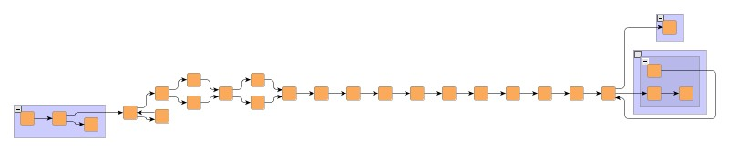
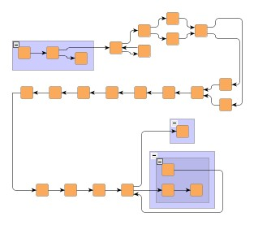

| Class GraphLayoutLineWrapper | ||
|---|---|---|
| Prev | Chapter 5. Automatic Graph Layout | Next |
Class GraphLayoutLineWrapper is a
layout algorithm that can be used to "line-wrap" respectively "column-wrap" a
graph layout.
It allows, for example, to specify a desired aspect ratio for a wrapped layout,
or a fixed width (height) for the lines (columns) of a wrapped layout.
is a
layout algorithm that can be used to "line-wrap" respectively "column-wrap" a
graph layout.
It allows, for example, to specify a desired aspect ratio for a wrapped layout,
or a fixed width (height) for the lines (columns) of a wrapped layout.
GraphLayoutLineWrapper is realized as a layout stage, i.e., it is an extension
of abstract class AbstractLayoutStage .
.
Most commonly, class GraphLayoutLineWrapper is used in conjunction with hierarchical layouts. Figure 5.13, “Hierarchical layout before and after line-wrapping” presents a hierarchical layout that has been line-wrapped to achieve a desired aspect ratio.
Figure 5.13. Hierarchical layout before and after line-wrapping
|

|
| Extended hierarchical left-to-right layout. |
|

|
| The same graph line-wrapped so that width and height are nearly the same, i.e., an aspect ratio of 1.0 is nearly achieved. |
Example 5.23, “Using GraphLayoutLineWrapper in conjunction with hierarchical layout” shows how class GraphLayoutLineWrapper can be used to wrap hierarchical top-to-bottom layouts.
Example 5.23. Using GraphLayoutLineWrapper in conjunction with hierarchical layout
// 'graph' is of type y.layout.LayoutGraph. GraphLayoutLineWrapper gllw = new GraphLayoutLineWrapper(); gllw.setColumnMode(true); gllw.setMirroringEnabled(false); // Use grouping-aware hierarchical layout as the core layouter. gllw.setCoreLayouter(new IncrementalHierarchicLayouter()); mySetupNodeHierarchy(graph); // Use buffered layout. new BufferedLayouter(gllw).doLayout(graph);
GraphLayoutLineWrapper provides a set of options that influence its behavior.
| Column Mode | |
| API | void setColumnMode(boolean columnMode) |
| Description | Determines whether the graph layout should be column-wrapped instead of line-wrapped. |
| Spacing | |
| API | void setSpacing(double spacing) |
| Description | Defines the spacing between adjacent lines (columns) of the line-wrapped (column-wrapped) graph layout. |
| Edge Spacing | |
| API | void setEdgeSpacing(double edgeSpacing) |
| Description | Defines the spacing between adjacent edge paths that connect consecutive lines (columns) of the line-wrapped (column-wrapped) graph layout. |
| Mirroring | |
| API | void setMirroringEnabled(boolean enabled) |
| Description | Determines whether the lines (columns) of the line-wrapped (column-wrapped) graph layout should be arranged in an alternating manner so that every second line (column) goes from right to left (bottom to top) instead of left to right (top to bottom). |
| Pre-set vs. Automatic Line Width (Column Height) | |
| API | void setFixedWidthLineBreaks(boolean fixedWidthLineBreaks) |
| Description |
Determines whether the lines (columns) of the line-wrapped (column-wrapped) graph
layout should use the width (height) as set using setFixedWidth(double) |
| Fixed Line Width (Column Height) | |
| API | void setFixedWidth(double width) |
| Description | Defines the width (height) that should be used for the lines (columns) of the line-wrapped (column-wrapped) graph layout. This setting only has an effect if pre-set line width (column height) is enabled. |
| Aspect Ratio | |
| API | void setTargetRatio(double) |
| Description | Defines the desired aspect ratio that should be achieved for the line-wrapped (column-wrapped) graph layout. This setting only has an effect if automatic line width (column height) is enabled. |
|
Copyright ©2004-2015, yWorks GmbH. All rights reserved. |